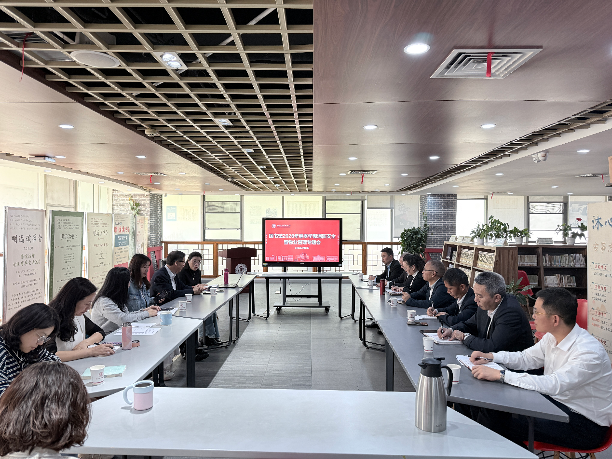

学院通知 · 教学通知
图书馆召开2026年春季学期消防安全暨物业管理专题会
发布时间：2026-04-30 20:10:51
4月24日上午，图书馆2026年春季 学期消防 安全暨物业管理专题会在江安图书馆明远文库召开。图书馆党委书记秦远清出席会议并讲话。图书馆 安全运维中心 全体人员，物业公司相关人员 等 参加会议。 会议由图书馆党委副书记兼纪委书记、副馆长杜小军主持。 会议听取了 安全运维中心 关于 文理 图书 馆、工学 图书 馆、医学 图书 馆 和 江安 图书 馆 在 安全巡查、读者秩序维护、馆舍维修、施工管理、防汛准备、消防设施检查、消防疏散演练等方面的情况汇报， 围绕图书馆春季 学期消防 安全、馆舍运维、物业服务和重点工程项目保障等工作开展专题研讨，并 就相关问题研究解决措施。 会议指出，消防安全、馆舍安全和物业管理是图书馆安全有序运行的重要基础。要进一步增强底线思维，强化风险意识，聚焦重点环节，做到问题早发现、早报告、早处置，实行闭环管理。对外来施工人员入馆作业，要将消防安全和文明施工等要求落实到合同约定、进场告知和现场管理全过程 。 对师生反映较集中的问题，要及时回应、规范管理、持续改进。对于重点工程项目，要做好施工安排、责任分工和应急预案，组织相关分馆和物业公司加强协调联动，提前做好师生告知、现场巡查、安全防护和应急处置等工作，确保重点工程安全、有序推进。 会议强调，安全无小事，安全是发展的前提和基础。图书馆安全工作关系师生生命安全、财产安全和学校运行秩序，必须始终摆在突出位置。要进一步提高思想认识，克服惯性思维和经验主义，善于用发展变化和普遍联系的观点看待各类安全隐患，从小处、细处、关联处发现问题、 研 判风险、防范风险，切实把安全工作抓在日常、严在经常。 会议认为，安全工作关键在人。图书馆工作人员和物业人员要不断提升安全工作素质和应急处置能力，熟悉岗位职责，掌握灭火器使用、突发情况处置等基本技能，不能把安全工作简单理解为“值班坐班”或“发现问题后上报”。每个岗位都要真正负起责任，把学校和单位赋予的职责落实到具体行动中，做到守土有责、守土负责、守土尽责。 会上明确，图书馆是一个整体， 安全运 维、物业服务、条件保障、文献服务、信息技术等工作相互联系、相互支撑。各岗位既要明确责任边界，也要增强大局意识和协同意识。凡是涉及集体安全、运行秩序和师生利益的事项，都要主动提醒、主动监督、主动协调，相互配合、不分内外，形成齐抓共管的工作合力。 会议要求，安全管理要在行动上做细做实。要做日常工作的有心人，深入容易被忽视的部位开展检查，认真 研 判隐患可能产生的累积效应和连锁影响。各项举措要务实管用，不能停留在表面。要通过共同努力，把图书馆建设成为秩序规范、运行平稳、环境和谐宜人的一流服务空间，为学校建设世界一流大学提供坚实保障。 会议要求，相关部门和物业公司要认真传达落实会议精神，进一步完善工作流程，压实岗位责任，加强日常巡查和问题闭环整改，确保各项安全管理要求落实到岗、落实到人。 文字、图片 ： 安全运维中心 刘欣
